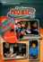
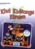
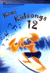
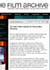
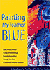
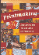
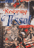
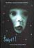
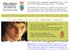

Events Events |
What's new
Into Music 3: Classroom Music for years 7–10

Into Music 3 is the third book and CD in a series of music resources for classroom teachers. The series is designed to provide practical, contemporary ideas for classroom music that link directly to The Arts in the New Zealand Curriculum. The book has four main chapters – Listening, Singing, Playing, and Creating and Representing – and each chapter includes three teaching units. Also online on TKI are two downloadable MIDI files that support the "Twelve-bar Blues" unit in the Playing chapter (page 51).
http://www.tki.org.nz/r/arts/music/into_music_e.php
Copies of Into Music 3 are being distributed to schools on the basis of roll size. Schools are entitled to a further three copies free on request. More copies or a teacher's own personal copy can be purchased at the additional price of $19.90. Please use item number 27579 when ordering.
Schools that require additional copies may request or purchase them from:
Learning Media Customer Services, Box 3293, Wellington.
Phone: (04) 471 5549, Freephone : 0800 800 565, Email: orders@learningmedia.co.nz
Back to top
|
Kiwi Kidsongs 11

There are 10 songs on this CD compilation of music for primary schools. The songs are suitable for students of different ages, cultures, abilities, and interests, and support the teaching of music as described in The Arts in the New Zealand Curriculum.
There are two tracks of each song: one is sung, and the other is an instrumental version to sing along with or use for backing performances. There is also an accompanying booklet of teachers' notes, lyric sheets, and music.
The notes give background information about each song and suggestions for its use. Kiwi Kidsongs can be used for:
- teaching children to sing
- acting out songs
- identifying instruments and sounds
- beating out rhythms.
Appropriate songs can be used as a starter for discussion – for example, the cultural setting or the characters.
Published 2003 by Learning Media for the Ministry of Education.
A reference copy of each kit is distributed free to primary schools. Additional copies may be purchased from Learning Media Ltd:
www.learningmedia.co.nz
Phone: 0800 800 565
Fax: 0800 800 570
Postal address: Learning Media Ltd, PO Box 3293, Wellington 6001
Item number: 26588
Back to top
Kiwi Kidsongs 12

The latest in the Kiwi Kidsongs series contains 10 songs, most of which were written specifically for this publication. As well as ten vocal versions, the CD provides instrument-only tracks for accompanying classroom singing and school performances. Provided with the CD are teachers' notes, lyric sheets, music for each song, and two arrangements for classroom instruments. To guide learners of these arrangements, there is a separate recording of each instrumental part.
Published 2003 by Learning Media for the Ministry of Education. A reference copy of each kit is distributed free to primary schools. Additional copies may be purchased from Learning Media Ltd:
www.learningmedia.co.nz
Phone: 0800 800 565
Fax: 0800 800 570
Postal address: Learning Media Ltd, PO Box 3293, Wellington 6001
Back to top
Musician Mentors in Schools
The NZ Music Commission has a contract with the Ministry of Education to provide a free music mentoring scheme to year 7–13 students in schools throughout New Zealand. Professional musicians in the pop/rock genre will visit chosen schools for five sessions, offering expertise in recording, performance and song-writing. This opportunity is currently open to schools in the Wairarapa, Canterbury and Nelson.
Applications and enquires should be emailed to:
stephanie@nzmusic.org.nz
Back to top
ON TAPE
A moving-image resource for secondary schools

The New Zealand Film Archive has launched the ON TAPE video library. This library will enable New Zealanders to access some of the archive's outstanding collection of contemporary and historical moving images.
"The general aim of the ON TAPE programme is to produce a series of resources on video that link directly to the topic areas in the New Zealand curriculum. The intent has been to allow film and television images to tell their own story, with no attempt made to alter the message that the images provide. Detailed background notes provide necessary information on the source and context of extracts, but the analysis of the images is, as it should be, the task of the learner and facilitator."
Alex Burton, Education Co-ordinator, New Zealand Film Archive
Videos are available in subject areas which support the New Zealand Arts Curriculum, including:
- English / Media Studies;
- History / Social Studies;
- Art / Art History;
- Music.
There is no rental charge to schools for the videos. The only cost is a postage levy to ensure efficient delivery and return.
For more information, or to order videos online, visit www.filmarchive.org.nz
Back to top
Online VUW Collection Tour
The Adam Art Gallery presents the new Online VUW Collection Tour. This has been developed as a learning resource for secondary students of art history and practical art.
The tour looks at selected works from Victoria University of Wellington's art collection. The works relate to the Modern New Zealand Art component of Bursary Art History, NCEA levels 2 and 3, and to The Visual Arts in the New Zealand arts curriculum.
An innovative and stimulating approach to learning in and out of the classroom, this resource gives secondary students access to information and images about significant artists and artworks in New Zealand.
Visit: www.vuw.ac.nz/adamartgal/ed/artcollectiontour
Back to top
Painting My Teacher Blue

Written by five New Zealand art specialists, this book will enable New Zealand primary school teachers to plan and teach visual arts programmes that reinforce the richness and depth of The Arts in the New Zealand Curriculum. The book includes sample lessons on talking with students about art, demonstrates how to plan using the curriculum document, and outlines processes and units for commonly used media, as well as showing assessment and evaluation procedures. Accompanying illustrations provide alternative directions for each unit and/or exemplar of work. In addition, the authors discuss the advocacy of visual art by providing explanations about why we teach art. Authors are Lola MacKinnon, Robert Hoeberigs, Carole Johnston, Cathy Warden, and Elizabeth Hanna-Latham. The book is published in 2001 by Gilt Edge Publishing, Lower Hutt, Wellington, New Zealand.
Back to top
Printmaking

Printmaking is the third of five books and posters from the Exploring
Visual Arts in Years 1 – 6 series. The book is designed to enrich
children's practical experience of learning in, through, and about printmaking.
The book introduces two printmakers: Jo Ogier and Gabrielle Belz. It explores
Jo's woodcut print "Nikau", and Gabriel's linocut and monoprint "Hinemanu
– Singing in the Dawning (2000)". Posters accompanying the book
show each artist's work, as well as an image of each artist at work.
To help student interaction with the art works, notes and suggested
activities are provided. These include ways of viewing, interpreting and
discussing the works. Also included is a practical section on classroom
organisation, a glossary, and a list of teaching and learning resources.
Published by Learning Media Ltd
(Box 3293, Wellington, New Zealand) for the Ministry of Education.
Back to top
Restoring Tissot

Restoring Tissot by Tessa Duder is a booklet from the Applications
series, which is intended for use by students in years 9–11. The book uses the
story of New Zealand's first major art theft, the armed robbery of James
Tissot's valuable painting "Still on Top", to present science concepts
and technological practice involved in the restoration of the art work.
The booklet describes the three stages of treatment – documentation
and research, conservation, and restoration. Teacher's notes accompany
the booklet. These include background information, topic-based activities,
a concept map, and worksheets. Published by Learning
Media Ltd (Box 3293, Wellington, New Zealand) for the Ministry of
Education.
Back to top
Royal New Zealand Ballet Dance Education Resource (book and CD-ROM)
This resource was written by the Royal New Zealand Ballet Company for primary, intermediate and lower secondary school teachers and their students. It is available in both CD-ROM (with video footage) and hard copy. It provides a brief introduction to the history and development of the Royal New Zealand Ballet, and highlights some of its major artists and directors.
Back to top
Sweet! A Taste of New Zealand Music

This music education resource consists of a booklet, "Teachers' guidelines: Popular New Zealand Music for years 9–10 school music study", an audio CD, a companion CD-ROM, and a poster featuring New Zealand musicians. Sweet! is designed for teachers and students of year 9–10 in New Zealand secondary schools, but can be readily adapted to meet the needs of years 7 and 8. It encompasses all four strands in The Arts in the New Zealand Curriculum up to level 5 in the discipline music.
The CD-ROM provides for high levels of student interaction, as well as providing a comprehensive introduction to the music industry through links to music sites. Around 50 New Zealand artists from a wide range of genres are presented throughout the resource.
Sweet! is published by the New Zealand Music Industry Commission, P O Box 37–386, Parnell, Auckland, info@nzmusic.org.nz. It was produced with funding support from the Ministry of Education.
Back to top
Teachers' Guide to The Lord of the Rings Exhibition

For Te Papa, Learning Media developed a guide for all teachers of students in years 7–11. It complements class visits to The Lord of the Rings Motion Picture Trilogy – The Exhibition.
The activities in this guide put your students in the director's chair. They encourage the same sort of creativity and ingenuity that Peter Jackson and his team used in making The Lord of the Rings.
Topics include:
- How do you make chain mail that looks like the real thing but doesn't weigh a ton?
- How do you make big look small and small look big?
- How do you make new stuff look worn and torn?
While the exhibition reveals some of the filmmakers' secrets for creating such effects, the activities allow your students to come up with their own solutions. The guide is also an invaluable resource for schools unable to visit Te Papa.
The Lord of the Rings Exhibition Teachers' Guide website can be found at www.tepapa.govt.nz/rings/teachers
Published by Learning Media Ltd (Box 3293, Wellington, New Zealand) for Te Papa Tongarewa – The Museum of New Zealand.
Back to top
|